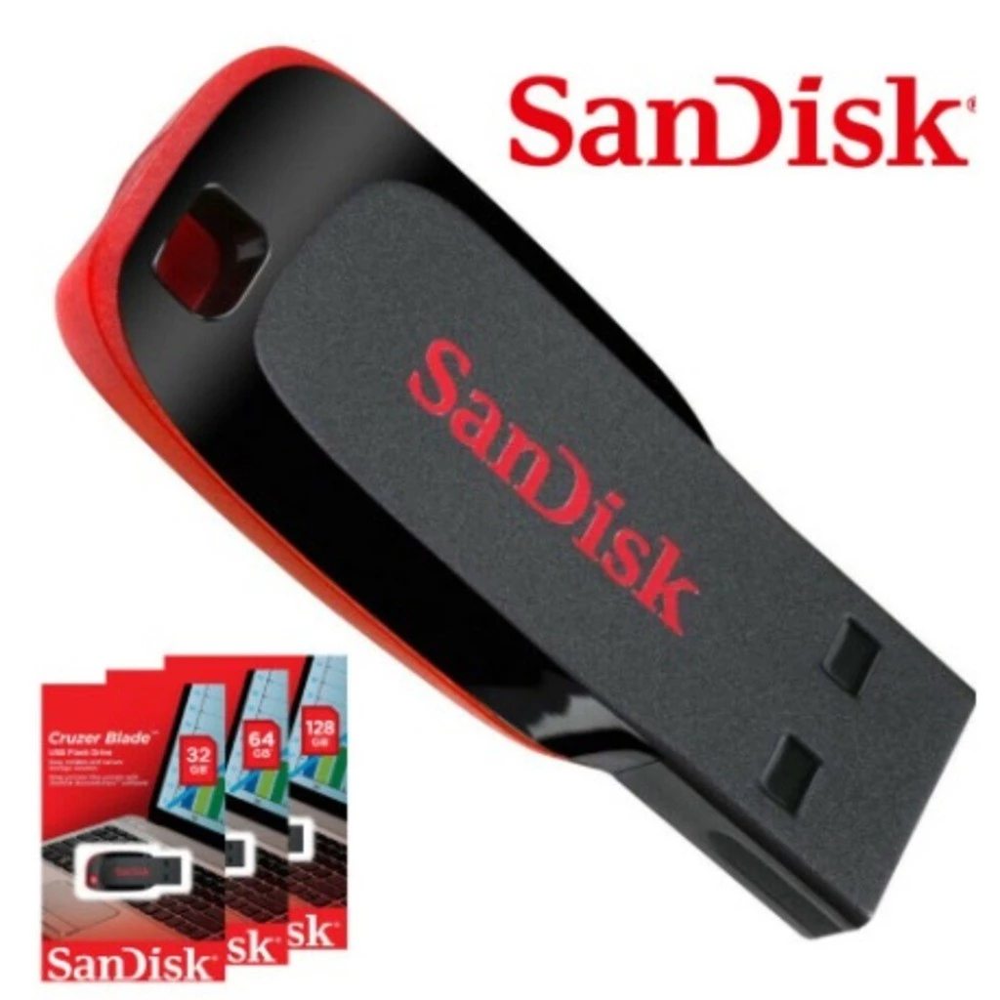
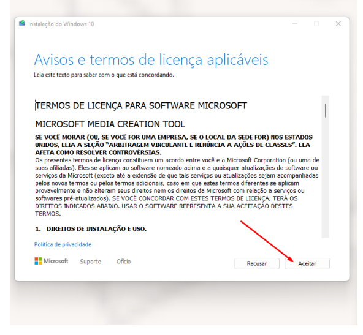
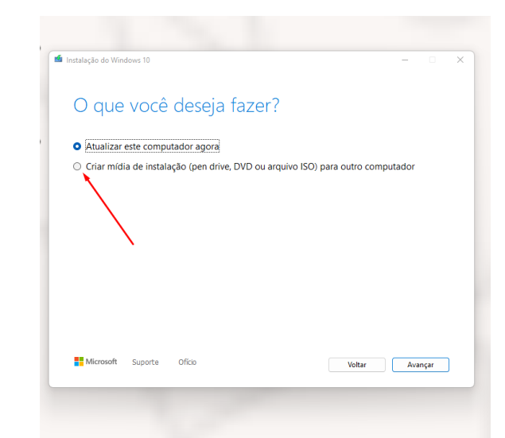
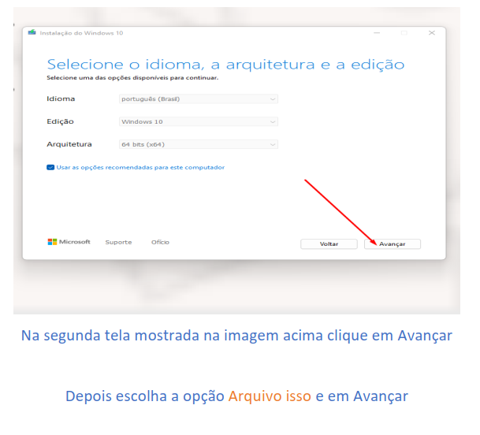
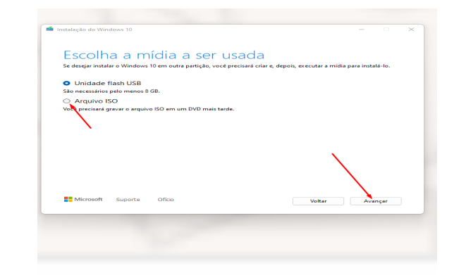

1. Pendrive USB : Seu Dispositivo de Instalação

Vou deixar meu link de afiliado da Shopee se acaso precisar de um pendrive para não correr o risco de clicar em outro link que seja malicioso. Se precisar, é só clicar na imagem do Pendrive que te levará para a Shopee.
Você precisará de um pendrive com no mínimo 8GB de capacidade. Para o Windows 10 ou 11, recomendamos um pendrive de 16GB ou 32GB para garantir espaço suficiente. É importante ressaltar que todos os dados no pendrive serão apagados durante o processo, então certifique-se de fazer backup de qualquer arquivo importante que esteja nele.
Especificações do Pendrive:
- Capacidade mínima: 8GB
- Capacidade recomendada: 16GB ou superior
- Velocidade: USB 3.0 ou superior (para instalação mais rápida)
2. Imagem ISO do Windows: O Sistema Operacional
Uma imagem ISO é como um "CD virtual" que contém todos os arquivos de instalação do Windows. Você pode baixar a imagem ISO oficial diretamente do site da Microsoft, garantindo assim que está instalando uma versão legítima e segura do sistema operacional.
Como Baixar a ISO do Windows 10 ou 11:
Para Windows 10, pesquise por "Baixar Windows 10 disco imagem (ISO)" ou no link acima do site oficial da Microsoft. Lá, você encontrará a Ferramenta de Criação de Mídia (Media Creation Tool) que pode baixar a ISO diretamente.
Para Windows 11, pesquise por "Baixar Windows 11" no Google e procure a seção de "Baixar Imagem de Disco (ISO) do Windows 11 para dispositivos x64" ou acesse o link acima do site oficial da Microsoft.
Passo a Passo para Criar a Imagem ISO:
- Clique no botão "Baixar agora" no site da Microsoft
- Escolha um local no seu computador para guardar o arquivo executável (MediaCreationTool_22H2.exe)
- Aguarde o download completar
- Vá até a pasta onde foi salvo o arquivo (geralmente em Downloads)
- Dê dois cliques no arquivo para abrir
- Aceite os termos da Microsoft clicando em "Aceitar"
- Escolha a opção "Criar mídia de instalação" e clique em "Avançar"
- Selecione "Arquivo ISO" e clique em "Avançar"
- Escolha onde deseja salvar a imagem ISO e aguarde o processo
Aceite os termos da Microsoft na Ferramenta de Criação de Mídia como mostra na imagem abaixo

Escolha a opção 'Criar mídia de instalação' como na imagem

Importante: Certifique-se de baixar a versão correta (Home, Pro, etc.) e a arquitetura (64 bits) que você deseja instalar.

